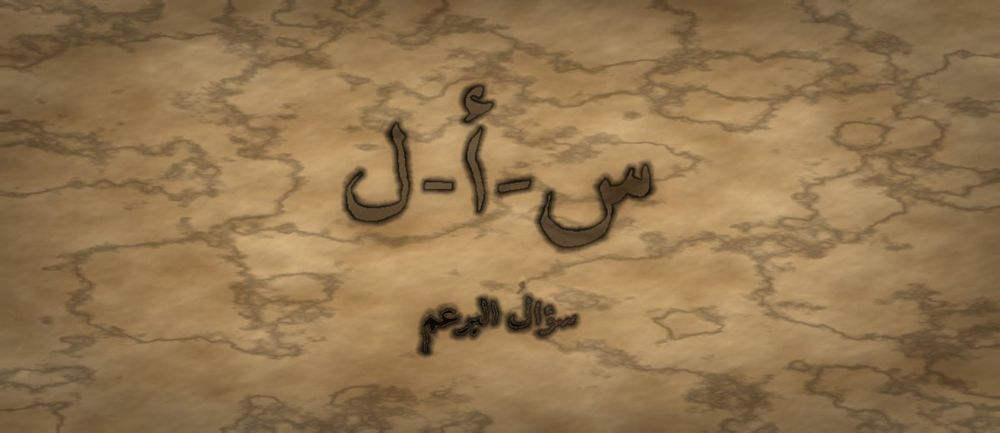

مَطبعةُ جُذور · دبي · MCMXXVI · سِلْسِلَةُ فَنِّ البَيان

مَرحلةُ البُرْعُم · الفئة ٧–٩ · الجذر س-أ-ل · الإمام الشافعي
❦ ✦ ❧
السِّفْرُ ٥ — سؤالُ البرعم
«سُؤَالِي مِفْتَاحٌ، لَا امْتِحَانٌ»

الرِّسَالَةُ الجَوْهَرِيَّة
السُّؤَالُ لَيْسَ اعْتِرَافًا بِالْجَهْلِ بَلْ أَوَّلُ خُطْوَةٍ فِي الْعِلْمِ. وَفَرْقٌ بَيْنَ سُؤَالٍ يَفْتَحُ بَابًا فَيَقُولُ لِصَاحِبِهِ «أَخْبِرْنِي أَكْثَرَ»، وَسُؤَالٍ يُغْلِقُ بَابًا فَيَمْتَحِنُ أَوْ يُحْرِجُ. يَتَعَلَّمُ الطِّفْلُ هُنَا أَنْ يَسْأَلَ لِيَفْهَمَ، وَأَنْ يَحْتَمِلَ أَنْ يَبْقَى السُّؤَالُ مَفْتُوحًا.
بِطَاقَةُ هُوِيَّةِ السِّفْر
| المستوى / الدرجة | بُرْعُم — بُرْعُمٌ يَسْأَلُ (الدرجةُ الثانيةُ في المستوى الثاني) |
| الفئة العمرية | ٧–٩ سنوات · نطاقُ تداخلٍ يمتدُّ إلى ١٠ للمتعلّمِ المتأنّي |
| الجذر الأساسي | س – أ – ل · السُّؤَالُ: الطَّلَبُ حِينَ يَصِيرُ مِفْتَاحًا |
| أسرة الجذر | سُؤَال · سَأَلَ · سَائِل · مَسْؤُول · مَسْأَلَة · تَسَاؤُل |
| المحطّة | السُّؤَالُ — أوّلُ أداةٍ يفتحُ بها الطفلُ بابَ غيرِهِ برفقٍ |
| المرساة الحسّيّة | قبضةٌ تُدارُ في الهواءِ كمفتاحٍ مع كلِّ سؤالٍ مفتوحٍ يبدأُ بـ«كيفَ» أو «لماذا» |
| الاستعارة | البرعمُ الذي أنصتَ، يمدُّ ساقَهُ الرفيعةَ نحوَ ما لا يعرفُهُ ليبلغَ الضوءَ |
| الشخصيتان الحكيمتان | الإمامُ الشافعيُّ (صاحبُ المناظرةِ والسؤالِ المُنصِفِ) + الجَدّةُ رملة |
| الشخصية الرمزيّة | نورُ البرعمِ — بعدَ أنْ تعلّمتِ الإنصاتَ |
| الشخصية المضادّة | الْحَجَرُ الصَّامِتُ — شخصيّةٌ رمزيّةٌ (لا تاريخيّةٌ) يخبّئُ أسئلتَهُ خوفًا، ويتعلّمُ أنْ يسألَ |
| المهارة (فعل) | أَسْأَلُ — الحلقةُ الخامسةُ في القوسِ التراكميِّ، وهي ثمرةُ الإنصاتِ |
| المرجعُ النظريّ | استرشادًا بـ TRT — نظرية القراءة الملموسة · ومجال الوعيِ الاجتماعيِّ والفضولِ المعرفيِّ |
| حدّ اللمس | لا تُرفَعُ يدُ طفلٍ بيدِ المرافقِ ليسألَ؛ الإشارةُ والحركةُ من الطفلِ وحدَهُ |
صَاحِبُ السِّفْرِ مِنَ التُّرَاث
الإمامُ محمّدُ بنُ إدريسَ الشافعيُّ فقيهٌ عربيٌّ من القرنِ الثانِي الهجريِّ، مؤسِّسُ المذهبِ الشافعيِّ وواضعُ «الرسالةِ» في أصولِ الفقهِ، واشتُهِرَ بأدبِ المناظرةِ وبقولِهِ إنّهُ ما ناظرَ أحدًا إلّا أحبَّ أنْ يُظهِرَ اللهُ الحقَّ على لسانِ صاحبِهِ. نستلهمُ منهُ هنا: أنَّ السؤالَ طلبُ فهمٍ لا طلبُ غَلَبَةٍ.
الشَّخْصِيَّةُ المُضَادَّة — الْحَجَرُ الصَّامِتُ — شخصيّةٌ رمزيّةٌ لا تاريخيّةٌ، جالسٌ في الحقلِ منذُ سنينَ مملوءًا بأسئلةٍ لم ينطقْ بها، خوفًا من أنْ يضحكَ منهُ أحدٌ. لا يُهزَمُ ولا يُشيطَنُ؛ بل يتعلّمُ أنْ يُخرِجَ سؤالًا واحدًا صغيرًا، فيخفُّ ثقلُهُ ويعرفُ أنَّ السائلَ لا يُعابُ.
الجَذْرُ وَأُسْرَتُه
س-أ-ل — سُؤَال · سَأَلَ · سَائِل · مَسْؤُول · مَسْأَلَة · تَسَاؤُل
الجذرُ (س-أ-ل) مهموزُ العينِ، ولذلك تتقلَّبُ همزتُهُ رسمًا بحسبِ الحركةِ: «سُؤَال» على واوٍ، و«سَائِل» على نبرةٍ، و«مَسْأَلَة» على ألفٍ — وهذا مَدْخَلٌ إملائيٌّ نافعٌ للمعلّمِ. ويُلاحَظُ أنَّ «مَسْؤُول» من الجذرِ نفسِهِ: فمن يُسألُ يُسألُ عن أمانتِهِ — صلةٌ معنويّةٌ تُذكَرُ للمعلّمِ وتُبسَّطُ للطفلِ عندَ الحاجةِ.
القِصَّةُ الكَامِلَة
المشهد ١ — سُؤَالٌ يَقِفُ عِنْدَ الشَّفَتَيْنِ وَلَا يَخْرُجُ
صَارَتْ نُورُ تُنْصِتُ جَيِّدًا. تَجْلِسُ فِي الْحَلْقَةِ، وَتَعُدُّ عَلَى أَصَابِعِهَا، وَتَفْهَمُ. لَكِنَّ شَيْئًا جَدِيدًا بَدَأَ يَحْدُثُ: كُلَّمَا أَنْصَتَتْ جَيِّدًا، وُلِدَ فِي رَأْسِهَا سُؤَالٌ. وَكُلَّمَا وُلِدَ السُّؤَالُ، وَقَفَ عِنْدَ شَفَتَيْهَا وَلَمْ يَخْرُجْ. قَالَ لَهَا صَوْتٌ صَغِيرٌ فِي دَاخِلِهَا: «لَا تَسْأَلِي. سَيَقُولُونَ: كَيْفَ لَا تَعْرِفِينَ هَذَا؟ سَيَضْحَكُونَ.» فَكَانَتْ تَبْتَلِعُ سُؤَالَهَا وَتَسْكُتُ. وَفِي آخِرِ الْيَوْمِ شَعَرَتْ بِثِقَلٍ عَجِيبٍ فِي صَدْرِهَا، كَأَنَّهَا تَحْمِلُ حِجَارَةً صَغِيرَةً كَثِيرَةً. وَقَالَتْ: «أَنَا أَفْهَمُ نِصْفَ الْأَشْيَاءِ فَقَطْ... وَالنِّصْفُ الْآخَرُ حَبِيسٌ عِنْدَ فَمِي.» وَفِي اللَّيْلِ صَارَتْ تُرَاجِعُ أَسْئِلَتَهَا الْمَحْبُوسَةَ وَاحِدًا وَاحِدًا: لِمَاذَا يَطِيرُ الطَّيْرُ فِي سِرْبٍ وَاحِدٍ؟ وَكَيْفَ يَعْرِفُ الْمَطَرُ مَتَى يَنْزِلُ؟ وَمَاذَا قَصَدَتْ صَدِيقَتِي بِتِلْكَ الْكَلِمَةِ؟ أَسْئِلَةٌ كَثِيرَةٌ جَمِيلَةٌ، كُلُّهَا نَائِمَةٌ فِي صَدْرِهَا، لَا تَخْرُجُ وَلَا تَنَامُ حَقًّا. وَقَالَتْ: «مَا أَثْقَلَ سُؤَالًا لَا يُقَالُ.»
المشهد ٢ — الْحَجَرُ الصَّامِتُ يَنْصَحُهَا أَنْ تَبْتَلِعَ أَسْئِلَتَهَا
خَرَجَتْ نُورُ إِلَى الْحَقْلِ، فَرَأَتْ حَجَرًا كَبِيرًا جَالِسًا مُنْذُ سِنِينَ. قَالَ لَهَا الْحَجَرُ الصَّامِتُ بِصَوْتٍ ثَقِيلٍ: «أَعْرِفُ مَا بِكِ. أَنَا مِثْلُكِ تَمَامًا. عِنْدِي أَلْفُ سُؤَالٍ عَنِ الْمَطَرِ وَالنُّجُومِ وَالطُّيُورِ، وَلَمْ أَسْأَلْ وَاحِدًا مِنْهَا قَطُّ.» قَالَتْ نُورُ: «وَلِمَاذَا؟» قَالَ: «لِأَنَّ السَّائِلَ يَبْدُو جَاهِلًا. وَالسُّكُوتُ أَسْلَمُ. اسْكُتِي مِثْلِي تَرْتَاحِي.» جَرَّبَتْ نُورُ نَصِيحَتَهُ يَوْمًا كَامِلًا، فَلَمْ تَرْتَحْ. بَلْ صَارَتِ الْأَشْيَاءُ حَوْلَهَا أَغْرَبَ وَأَبْعَدَ. وَنَظَرَتْ إِلَى الْحَجَرِ وَقَالَتْ فِي نَفْسِهَا: «هُوَ لَمْ يَرْتَحْ أَيْضًا. هُوَ فَقَطْ صَارَ ثَقِيلًا جِدًّا حَتَّى لَمْ يَعُدْ يَقْدِرُ أَنْ يَتَحَرَّكَ.» ثُمَّ قَالَ الْحَجَرُ: «وَانْظُرِي إِلَيَّ: أَنَا لَا أَحَدَ يَضْحَكُ مِنِّي، وَلَا أَحَدَ يَتَكَلَّمُ مَعِي أَيْضًا.» فَتَنَبَّهَتْ نُورُ إِلَى شَيْءٍ: أَنَّ الْحَجَرَ لَمْ يَحْمِ نَفْسَهُ مِنَ الضَّحِكِ فَقَطْ، بَلْ حَمَاهَا مِنَ النَّاسِ كُلِّهِمْ. وَقَالَتْ: «أَنَا لَا أُرِيدُ أَنْ أَصِيرَ حَجَرًا. أُرِيدُ أَنْ أَبْقَى بُرْعُمًا يَنْفَتِحُ.»
المشهد ٣ — الشَّافِعِيُّ وَالْجَدَّةُ رَمْلَةُ: مِفْتَاحٌ لَا امْتِحَانٌ
جَاءَ إِلَى الْحَلْقَةِ رَجُلٌ عَالِمٌ هُوَ الْإِمَامُ الشَّافِعِيُّ، وَكَانَ يُنَاظِرُ النَّاسَ وَلَا يُحِبُّ أَنْ يَغْلِبَهُمْ. قَالَ لِنُورَ: «يَا بُنَيَّةُ، الْأَسْئِلَةُ نَوْعَانِ. سُؤَالٌ يَفْتَحُ بَابًا، وَسُؤَالٌ يُغْلِقُهُ. إِنْ قُلْتِ لِصَاحِبِكِ: أَلَا تَعْرِفُ هَذَا؟ — فَقَدْ أَغْلَقْتِ. وَإِنْ قُلْتِ: كَيْفَ عَرَفْتَ هَذَا؟ — فَقَدْ فَتَحْتِ.» وَقَالَتِ الْجَدَّةُ رَمْلَةُ: «وَلِلْمِفْتَاحِ شَكْلٌ يَا نُورُ: يَبْدَأُ بِـ كَيْفَ، أَوْ لِمَاذَا، أَوْ مَاذَا تَقْصِدُ، أَوْ أَخْبِرْنِي أَكْثَرَ. أَمَّا السُّؤَالُ الَّذِي جَوَابُهُ نَعَمْ أَوْ لَا، فَهُوَ بَابٌ ضَيِّقٌ.» ثُمَّ أَضَافَ الشَّافِعِيُّ: «وَاعْلَمِي أَنَّ خَيْرَ مَا فِي السُّؤَالِ أَنَّكِ قَدْ تَسْمَعِينَ جَوَابًا لَا يُعْجِبُكِ، فَتَزْدَادِينَ عِلْمًا لَا غَضَبًا.» ثُمَّ قَالَ الشَّافِعِيُّ: «وَأَنَا مَا نَاظَرْتُ أَحَدًا وَأَنَا أُرِيدُ أَنْ أَغْلِبَهُ، بَلْ كُنْتُ أُحِبُّ أَنْ يَظْهَرَ الْحَقُّ وَلَوْ عَلَى لِسَانِهِ هُوَ.» فَتَعَجَّبَتْ نُورُ وَقَالَتْ: «أَتَفْرَحُ إِنْ كَانَ صَاحِبُكَ هُوَ الْمُصِيبَ؟» قَالَ: «أَفْرَحُ جِدًّا، لِأَنِّي خَرَجْتُ بِعِلْمٍ لَمْ أَدْخُلْ بِهِ. وَهَذَا هُوَ الرِّبْحُ كُلُّهُ.»
المشهد ٤ — نُورُ تُدِيرُ الْمِفْتَاحَ لِأَوَّلِ مَرَّةٍ
رَجَعَتْ نُورُ إِلَى الْحَلْقَةِ وَقَلْبُهَا يَخْفِقُ. أَنْصَتَتْ إِلَى صَدِيقَةٍ تَحْكِي عَنْ رِحْلَةٍ إِلَى الْجَبَلِ، وَعَدَّتْ عَلَى أَصَابِعِهَا ثَلَاثَةَ أَشْيَاءَ. ثُمَّ جَاءَ السُّؤَالُ، وَوَقَفَ عِنْدَ شَفَتَيْهَا كَعَادَتِهِ. فَتَذَكَّرَتِ الْمِفْتَاحَ، وَأَدَارَتْ قَبْضَتَهَا فِي الْهَوَاءِ إِدَارَةً صَغِيرَةً، وَقَالَتْ: «كَيْفَ شَعَرْتِ حِينَ وَصَلْتِ إِلَى الْقِمَّةِ؟» فَتَوَقَّفَ الْكَلَامُ كُلُّهُ فِي الْحَلْقَةِ، وَالْتَفَتَتِ الصَّدِيقَةُ إِلَيْهَا وَعَيْنَاهَا تَلْمَعَانِ وَقَالَتْ: «مَا سَأَلَنِي أَحَدٌ هَذَا! شَعَرْتُ أَنَّ الْبُيُوتَ صَغِيرَةٌ وَأَنَّ مُشْكِلَتِي صَغِيرَةٌ مِثْلَهَا.» وَجَلَسَتْ نُورُ مَدْهُوشَةً. سُؤَالٌ وَاحِدٌ قَصِيرٌ... فَتَحَ بَابًا لَمْ تَكُنْ تَعْرِفُ أَنَّهُ مَوْجُودٌ. وَخَفَّ الثِّقَلُ فِي صَدْرِهَا حَجَرًا وَاحِدًا. ثُمَّ سَأَلَتْ سُؤَالًا ثَانِيًا أَصْغَرَ: «وَمَاذَا رَأَيْتِ مِنْ فَوْقُ؟» فَحَكَتِ الصَّدِيقَةُ وَحَكَتْ، وَالْتَفَّ الْأَطْفَالُ حَوْلَهُمَا يُنْصِتُونَ. وَلَمْ يَقُلْ أَحَدٌ لِنُورَ: «كَيْفَ لَا تَعْرِفِينَ؟» بَلْ قَالَ أَحَدُهُمْ: «عَلِّمِينَا كَيْفَ تَسْأَلِينَ هَكَذَا.» فَعَرَفَتْ نُورُ أَنَّ الْخَوْفَ الَّذِي مَنَعَهَا سِنِينَ كَانَ أَكْبَرَ مِنَ الْحَقِيقَةِ بِكَثِيرٍ.
المشهد ٥ — الْحَجَرُ يَسْأَلُ سُؤَالَهُ الْأَوَّلَ
عَادَتْ نُورُ إِلَى الْحَجَرِ الصَّامِتِ وَقَالَتْ: «لَنْ أَطْلُبَ مِنْكَ أَلْفَ سُؤَالٍ. وَاحِدٌ فَقَطْ. أَصْغَرُ سُؤَالٍ عِنْدَكَ.» صَمَتَ الْحَجَرُ طَوِيلًا، ثُمَّ قَالَ بِصَوْتٍ مُرْتَجِفٍ جِدًّا: «لِمَاذَا... لِمَاذَا يَنْزِلُ الْمَطَرُ عَلَيَّ وَلَا يَدْخُلُ فِيَّ؟» فَلَمْ يَضْحَكْ أَحَدٌ. جَلَسَتْ نُورُ بِجَانِبِهِ وَقَالَتْ: «هَذَا سُؤَالٌ جَمِيلٌ. أَنَا لَا أَعْرِفُ جَوَابَهُ.» فَقَالَ الْحَجَرُ: «أَلَا تَعْرِفِينَ؟ وَلَا تَخْجَلِينَ؟» قَالَتْ نُورُ: «لَا. سَنَسْأَلُ الْجَدَّةَ مَعًا، وَإِنْ لَمْ تَعْرِفْ سَنَبْقَى نَسْأَلُ.» وَشَعَرَ الْحَجَرُ بِشَيْءٍ لَمْ يَشْعُرْ بِهِ مُنْذُ سِنِينَ: صَارَ أَخَفَّ. وَقَالَ: «كُنْتُ أَظُنُّ السُّكُوتَ رَاحَةً، فَإِذَا هُوَ حِمْلٌ. سُؤَالِي لَمْ يُنْقِصْنِي شَيْئًا.» ثُمَّ قَالَ الْحَجَرُ بَعْدَ صَمْتٍ: «عِنْدِي سُؤَالٌ آخَرُ... وَلَكِنِّي سَأُؤَجِّلُهُ إِلَى الْغَدِ، لِأَذُوقَ هَذَا أَوَّلًا.» فَضَحِكَتْ نُورُ وَقَالَتْ: «هَذَا أَحْسَنُ. سُؤَالٌ فِي يَوْمٍ خَيْرٌ مِنْ أَلْفٍ تَبْقَى فِي الصَّدْرِ.» وَنَزَلَ الْمَطَرُ فِي تِلْكَ اللَّيْلَةِ، فَبَقِيَ الْحَجَرُ مُسْتَيْقِظًا يَنْظُرُ إِلَيْهِ وَيُفَكِّرُ، وَلَمْ يَعُدْ ثَقِيلًا.
المشهد ٦ — طَقْسُ الْخِتَامِ: مِفْتَاحٌ فِي الْيَدِ
اجْتَمَعَتِ الْحَلْقَةُ آخِرَ النَّهَارِ، وَمَعَهُمُ الْجَدَّةُ رَمْلَةُ. قَالَتِ الْجَدَّةُ: «طَقْسُنَا الْيَوْمَ فِي يَدِكَ. أَغْلِقْ قَبْضَتَكَ كَأَنَّ فِيهَا مِفْتَاحًا. وَحِينَ تُرِيدُ أَنْ تَسْأَلَ، أَدِرْهَا إِدَارَةً صَغِيرَةً، ثُمَّ قُلْ سُؤَالَكَ بِـ كَيْفَ أَوْ لِمَاذَا أَوْ أَخْبِرْنِي أَكْثَرَ.» فَجَرَّبَ الْأَطْفَالُ وَاحِدًا وَاحِدًا. وَقَالَتِ الْجَدَّةُ: «وَقَاعِدَتَانِ: لَا تَسْأَلْ لِتُحْرِجَ، وَلَا تَغْضَبْ إِنْ لَمْ يَأْتِكَ الْجَوَابُ الْيَوْمَ. بَعْضُ الْأَسْئِلَةِ تَنَامُ عِنْدَنَا سَنَةً ثُمَّ تَسْتَيْقِظُ.» قَالَتْ نُورُ: «إِذَنِ السُّؤَالُ لَا يُنْقِصُنِي.» قَالَتِ الْجَدَّةُ: «بَلْ يَفْتَحُكَ. وَغَدًا يَا نُورُ نَتَعَلَّمُ كَيْفَ نَقُولُ كُلَّ هَذَا بِرِفْقٍ — فَالْمِفْتَاحُ الْقَاسِي يَكْسِرُ الْبَابَ.» فَقَالَ أَحَدُ الْأَطْفَالِ: «وَإِنْ خِفْتُ أَنْ أَقُولَ سُؤَالِي أَمَامَ الْجَمِيعِ؟» قَالَتِ الْجَدَّةُ: «فَاكْتُبْهُ فِي وَرَقَةٍ وَضَعْهُ فِي صُنْدُوقِ الْأَسْئِلَةِ، وَنَقْرَؤُهُ بِلَا اسْمٍ. وَلَكَ أَنْ تَسْأَلَ، وَلَكَ أَلَّا تَسْأَلَ، وَلِمَنْ تَسْأَلُهُ أَنْ يَقُولَ: لَا أُحِبُّ أَنْ أُجِيبَ — فَنَقْبَلُ مِنْهُ بِلَا عِتَابٍ.»
النُّسْخَةُ المُخْتَصَرَة
كَانَتْ نُورُ تُنْصِتُ جَيِّدًا، فَتُولَدُ فِي رَأْسِهَا أَسْئِلَةٌ. لَكِنَّ السُّؤَالَ كَانَ يَقِفُ عِنْدَ شَفَتَيْهَا وَلَا يَخْرُجُ، خَوْفًا مِنْ أَنْ يَضْحَكَ أَحَدٌ. قَالَ لَهَا الْحَجَرُ الصَّامِتُ: «اسْكُتِي مِثْلِي.» فَسَكَتَتْ يَوْمًا، فَصَارَ صَدْرُهَا ثَقِيلًا. قَالَ لَهَا الْإِمَامُ الشَّافِعِيُّ: «سُؤَالٌ يَفْتَحُ بَابًا، وَسُؤَالٌ يُغْلِقُهُ.» وَقَالَتِ الْجَدَّةُ رَمْلَةُ: «ابْدَئِي بِـ كَيْفَ، أَوْ لِمَاذَا، أَوْ أَخْبِرْنِي أَكْثَرَ.» فَأَدَارَتْ نُورُ قَبْضَتَهَا كَمِفْتَاحٍ وَسَأَلَتْ صَدِيقَتَهَا: «كَيْفَ شَعَرْتِ عَلَى الْقِمَّةِ؟» فَفَرِحَتِ الصَّدِيقَةُ وَقَالَتْ: «مَا سَأَلَنِي أَحَدٌ هَذَا!» ثُمَّ سَأَلَ الْحَجَرُ سُؤَالَهُ الْأَوَّلَ، فَلَمْ يَضْحَكْ أَحَدٌ، فَصَارَ أَخَفَّ وَقَالَ: «سُؤَالِي لَمْ يُنْقِصْنِي شَيْئًا.» وَعَلَّمَتْهُمُ الْجَدَّةُ الطَّقْسَ: قَبْضَةٌ تُدَارُ كَمِفْتَاحٍ، ثُمَّ سُؤَالٌ مَفْتُوحٌ. وَقَالَتْ: «لَا تَسْأَلْ لِتُحْرِجَ، وَلَا تَغْضَبْ إِنْ تَأَخَّرَ الْجَوَابُ؛ بَعْضُ الْأَسْئِلَةِ تَنَامُ سَنَةً ثُمَّ تَسْتَيْقِظُ.» فَقَالَتْ نُورُ: «إِذَنِ السُّؤَالُ لَا يُنْقِصُنِي.» قَالَتِ الْجَدَّةُ: «بَلْ يَفْتَحُكَ.» وَقَالَتِ الْجَدَّةُ رَمْلَةُ: «السُّؤَالُ لَا يُنْقِصُكَ، بَلْ يَفْتَحُكَ.»
المِرْسَاةُ الحِسِّيَّة
يُغْلِقُ الطِّفْلُ قَبْضَتَهُ كَأَنَّ فِيهَا مِفْتَاحًا، ثُمَّ يُدِيرُهَا إِدَارَةً صَغِيرَةً فِي الْهَوَاءِ قَبْلَ أَنْ يَنْطِقَ بِسُؤَالِهِ. الْإِدَارَةُ إِشَارَةٌ لِنَفْسِهِ: تَمَهَّلْ، وَاجْعَلْ سُؤَالَكَ مُفْتَاحًا يَبْدَأُ بِـ كَيْفَ أَوْ لِمَاذَا أَوْ أَخْبِرْنِي أَكْثَرَ. وَبَعْدَ السُّؤَالِ يَفْتَحُ كَفَّهُ وَيَنْتَظِرُ صَامِتًا حَتَّى يَتِمَّ الْجَوَابُ. الْيَدُ يَدُهُ وَحْدَهُ، وَلَا تَرْفَعُهَا يَدُ أَحَدٍ.
العَنَاصِرُ الخَمْسَةُ لِلتَّطْبِيق
| المُخرَجُ اللُّغَويُّ | «أَخْبِرْنِي أَكْثَرَ عَنْ...» و«كَيْفَ شَعَرْتَ حِينَ...؟» — صيغتانِ مفتوحتانِ يملكُهما الطفلُ، مقابلَ الصيغةِ المُغلِقةِ «أَلَا تَعْرِفُ؟» التي نتدرَّبُ على تركِها. |
| الحركةُ الجسديّةُ | إدارةُ المفتاحِ: يُغلِقُ الطفلُ قبضتَهُ ويُديرُها إدارةً صغيرةً في الهواءِ قبلَ سؤالِهِ المفتوحِ. حركةٌ صامتةٌ يؤدّيها بنفسِهِ، تُهدِّئُ الاندفاعَ وتُذكِّرُ بالصيغةِ. |
| الدفءُ العلائقيُّ | «سؤالٌ واحدٌ لكلٍّ»: يروي أحدُهم خبرًا قصيرًا، ولكلِّ واحدٍ سؤالٌ مفتوحٌ واحدٌ فقط. الجوابُ حقٌّ لصاحبِهِ، ولهُ أنْ يقولَ: «لا أُحِبُّ أنْ أُجِيبَ» فيُقبَلُ بلا تعليقٍ. |
| البديلُ الحسّيُّ | بطاقاتُ المفاتيحِ: بطاقاتٌ مرسومٌ عليها مفتاحٌ ومكتوبٌ فيها «كَيْفَ»، «لِمَاذَا»، «مَاذَا تَقْصِدُ»، «أَخْبِرْنِي أَكْثَرَ» — يرفعُ الطفلُ بطاقةً بدلَ النطقِ إنْ ثقُلَ عليهِ الكلامُ. |
| الجسرُ الإنجليزيُّ | «My question is a key, not a test.» — تُقالُ مرّةً واحدةً بعدَ العربيّةِ. |
دَلِيلُ الأَهْلِ وَالمُعَلِّم
| قبل الجلسة | ضعوا الأجهزةَ في صندوقٍ، وضعوا بجانبَهُ «صندوقَ الأسئلةِ» وورقًا صغيرًا. اتّفِقوا على قاعدةٍ واحدةٍ معلنةٍ: في هذا البيتِ لا يُضحَكُ من سؤالٍ أبدًا، وأوّلُ من يلتزمُ بها الكبارُ. |
| أثناء الجلسة | لا تُسرِعوا بالجوابِ. قولوا: «سؤالٌ جميلٌ، ما رأيُكَ أنتَ أوّلًا؟» وإذا لم تعرفوا الجوابَ فقولوها صراحةً: «لا أعرفُ، لنبحثْ معًا» — فرؤيةُ كبيرٍ يجهلُ بلا خجلٍ أقوى درسٍ في هذا السفرِ. |
| بعد الجلسة | افتَحوا صندوقَ الأسئلةِ مرّةً كلَّ أسبوعٍ واقرَؤوا ما فيهِ بصوتٍ عالٍ. علّقوا على الثلّاجةِ «سؤالَ الأسبوعِ» الذي لم نجدْ لهُ جوابًا بعدُ، ليتعلّمَ الطفلُ أنَّ بقاءَ السؤالِ مفتوحًا ليسَ فشلًا. |
مُؤَشِّرَاتُ الرَّصْدِ الوَصْفِيَّة
| ما تُلاحِظُه | ماذا يعني |
|---|---|
| يبدأُ أسئلتَهُ بـ«كيفَ» أو «لماذا» أو «أخبِرْني أكثرَ» | انتقلَ من السؤالِ المُغلَقِ إلى السؤالِ المفتوحِ. مؤشّرٌ وصفيٌّ يُدوَّنُ بمثالٍ من كلامِهِ. |
| ينتظرُ تمامَ الجوابِ قبلَ أنْ يسألَ سؤالًا جديدًا | تراكمتْ مهارةُ الإنصاتِ من السفرِ السابقِ داخلَ مهارةِ السؤالِ. |
| يسألُ عن شعورِ صاحبِهِ لا عن الوقائعِ فقط | بدأَ الفضولُ يتّجهُ إلى الإنسانِ، وهذا تمهيدٌ طبيعيٌّ للُّطفِ في السفرِ التالي. |
| يحتملُ بقاءَ سؤالِهِ بلا جوابٍ دونَ ضيقٍ | نضجٌ معرفيٌّ مبكّرٌ. وغيابُهُ شائعٌ في هذهِ السنِّ ولا يُعَدُّ مانعًا من الانتقالِ. |
مُفْرَدَاتُ السِّفْر
| الكلمة | المعنى |
|---|---|
| سُؤَالٌ | كَلَامٌ تَطْلُبُ بِهِ أَنْ تَعْرِفَ شَيْئًا |
| مِفْتَاحٌ | شَيْءٌ صَغِيرٌ يَفْتَحُ بَابًا كَبِيرًا |
| مَسْأَلَةٌ | أَمْرٌ نُفَكِّرُ فِيهِ وَنَبْحَثُ عَنْ جَوَابِهِ |
| تَسَاؤُلٌ | سُؤَالٌ يَدُورُ فِي دَاخِلِكَ قَبْلَ أَنْ تَقُولَهُ |
| فُضُولٌ | رَغْبَةٌ جَمِيلَةٌ فِي أَنْ تَعْرِفَ أَكْثَرَ |
| جَوَابٌ | مَا يَرُدُّ بِهِ عَلَيْكَ مَنْ سَأَلْتَهُ |
الجِسْرُ الإِنْجْلِيزِيّ
| عربي | English |
|---|---|
| سُؤَال | question |
| مِفْتَاح | key |
| أَخْبِرْنِي أَكْثَرَ | tell me more |
| فُضُول | curiosity |
| جَوَاب | answer |
| لَا أَعْرِفُ بَعْدُ | I don't know yet |
أَسْئِلَةُ الفَهْم
- مَاذَا كَانَ يَحْدُثُ لِسُؤَالِ نُورَ كُلَّمَا أَرَادَتْ أَنْ تَقُولَهُ فِي أَوَّلِ الْقِصَّةِ؟ (تَذَكُّرٌ)
- لِمَاذَا صَارَ الْحَجَرُ أَخَفَّ بَعْدَ سُؤَالٍ وَاحِدٍ فَقَطْ؟ (اسْتِنْتَاجٌ)
- أَغْلِقْ قَبْضَتَكَ وَأَدِرْهَا كَمِفْتَاحٍ، ثُمَّ اسْأَلْ مَنْ بِجَانِبِكَ سُؤَالًا يَبْدَأُ بِـ «كَيْفَ». مَاذَا تَغَيَّرَ فِي جَوَابِهِ؟ (سُؤَالٌ حِسِّيٌّ حَرَكِيٌّ)
- مَا السُّؤَالُ الَّذِي تُخَبِّئُهُ أَنْتَ مُنْذُ زَمَنٍ وَلَمْ تَقُلْهُ؟ وَمَاذَا يَحْتَاجُ لِيَخْرُجَ؟ (رَبْطٌ شَخْصِيٌّ)
نَشَاطٌ وَوَسَائِط
| نشاطٌ فنّيّ | «حَلقةُ المفاتيحِ»: يصنعُ الطفلُ من الورقِ المقوّى أربعةَ مفاتيحَ، يكتبُ على كلٍّ منها صيغةً مفتوحةً (كَيْفَ · لِمَاذَا · مَاذَا تَقْصِدُ · أَخْبِرْنِي أَكْثَرَ) ويلوّنُها، ثمَّ يعلّقُها في حلقةٍ ويحملُها معهُ. لا نموذجَ يُحاكَى ولا تقييمَ للرسمِ. |
| نشاطٌ تمثيليّ | «بابٌ يُفتَحُ وبابٌ يُغلَقُ»: يقفُ طفلٌ ممثّلًا البابَ، ويسألُهُ آخرُ سؤالًا مُغلِقًا («ألا تعرفُ؟») فيضمُّ البابُ ذراعيهِ، ثمَّ سؤالًا مفتوحًا («كيفَ عرفتَ؟») فيفتحُهما. ثمَّ يتبادلانِ الدورينِ ويصفانِ شعورَهما. لا تلامسَ بينَ الطفلينِ. |
جِسْرُ الذَّاكِرَة
إلى الوراءِ — السفرُ الرابعُ «إنصاتُ البرعمِ»: تعلَّمتَ أنْ تُنصِتَ لتفهمَ، والسؤالُ هنا ثمرةُ ذلك الإنصاتِ: من لم يُنصِتْ لم يجدْ ما يسألُ عنهُ. إلى الأمامِ — السفرُ السادسُ «لُطفُ البرعمِ»: «صارَ بيدِكَ مفتاحٌ، وبقيَ أنْ تتعلَّمَ كيفَ تُديرُهُ برفقٍ. في المرّةِ القادمةِ تتعلَّمُ اللُّطفَ، فالمفتاحُ القاسي يكسرُ البابَ الذي جئتَ لتفتحَهُ.»
قَائِمَةُ التَّحَقُّق
- الجذرُ (س-أ-ل) صحيحٌ صرفيًّا، وتقلُّبُ رسمِ الهمزةِ فيهِ موضَّحٌ للمعلّمِ بدقّةٍ — صفرُ أخطاءٍ إملائيّةٍ.
- السؤالُ معروضٌ كدعوةٍ لا استجوابٍ، وحقُّ الطفلِ في قولِ «لا أُحِبُّ أنْ أُجِيبَ» مكتوبٌ صراحةً، ولا أسئلةَ عن البيتِ أو الجسدِ أو المالِ.
- حدُّ اللمسِ محفوظٌ: لا تُرفَعُ يدُ الطفلِ ولا تُوجَّهُ بيدِ المرافقِ، ولا تلامسَ في النشاطِ التمثيليِّ.
- الشخصيّةُ التراثيّةُ (الإمامُ الشافعيُّ) موثَّقةٌ بهامشٍ صحيحٍ تاريخيًّا، والحجرُ موسومٌ كرمزيٍّ لا تاريخيٍّ، وهو يتحوّلُ ولا يُشيطَنُ.
- الاسمُ المستعمَلُ للنَّظَريّةِ هو TRT — نَظَرِيَّةُ القراءةِ الملموسةِ، ولا ادّعاءَ اعتمادٍ لأيِّ إطارٍ دوليٍّ (استرشادًا لا اعتمادًا).
- مؤشّراتُ الرصدِ وصفيّةٌ لا بوّاباتٍ، ولا مسابقةَ في عددِ الأسئلةِ ولا مقارنةَ بينَ الأطفالِ، والتشكيلُ مدقّقٌ على القصّةِ والحوارِ والطقوسِ.

مَطبعةُ جُذور · دبي · MCMXXVI · صمّمه وطوّره د. عادل ف. عامر
Designed and developed by Dr. Adel F. Amer · Amer (2024) · CC BY-NC-SA 4.0
↤ عودةٌ إلى خِزانةِ الأسفار